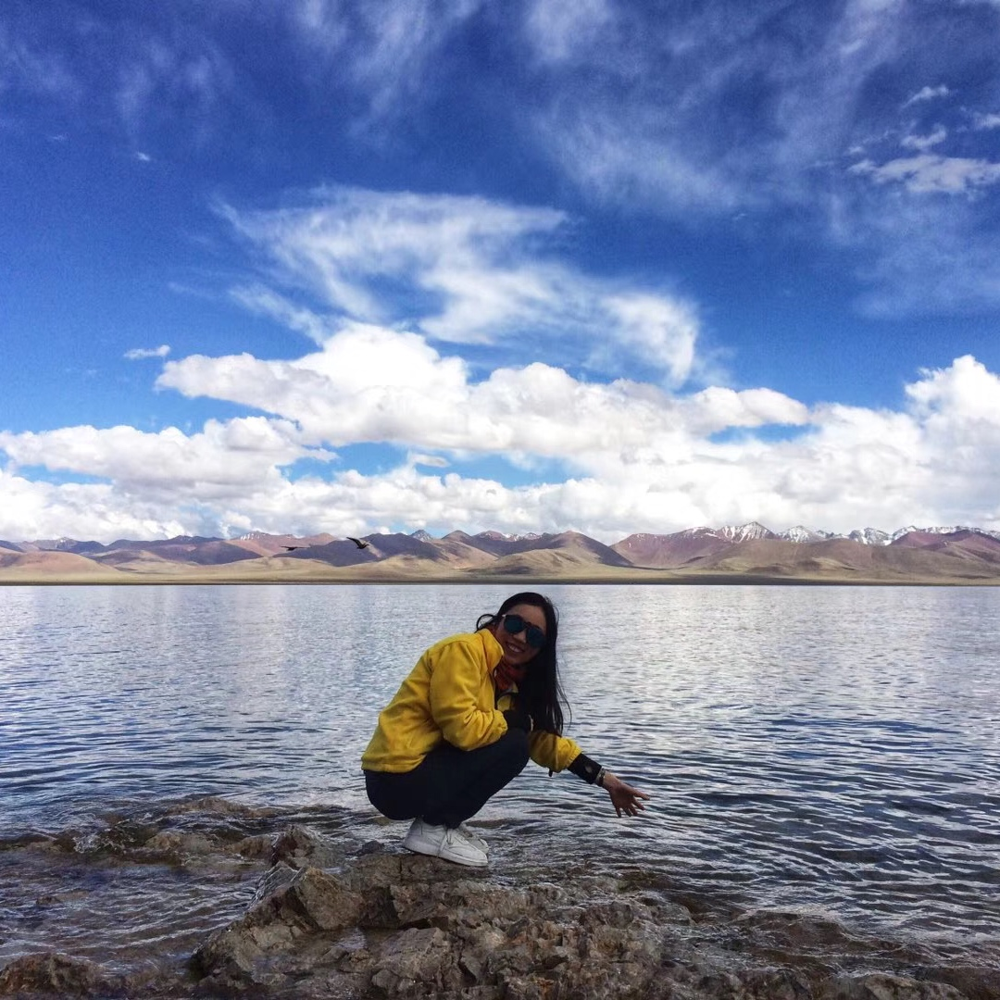

Yinyan Liu
Ph.D Student
School of Electrical and Information Engineering
The University of Sydney
Email: liuyy15@tsinghua.org.cn
Phone: 18664907291 Wechat: yanyzw
[CV] [Google Scholar] [Github]
Room 413, J03 Electrical Engineering Building, The University of Sydney, Sydney, Australia.
Biography News Educations Work Experiences Publications Awards Academic Service Teaching Links
I am a Ph.D student of Engineering faculty, The University of Sydney, Australia and work with Dr. Jing Qiu in the Power Systems Lab. Before that I have worked as an Algorithm Engineer in Rokid A-Lab in Beijing, China. I received my M.E degree from Department of Automation, Tsinghua University, Beijing, China and my B.E degree from School of Control and Computer Engineering, North China Electric Power University, Beijing, China in Jul. 2018 and Jul. 2011 respectively.
My current research interest broadly includes smart energy management, electricity pricing and machine learning. If you want to know more about me, please find in my [CV]
- 12/05/2019: We release the Pytorch train/test code for EDNet.

- 12/06/2019: I received ' University of Sydney International Scholarship (USydIS)'.
- 11/03/2019: We have 1 paper accepted to IEEE Transaction on Neural Networks and Learning Systems.
- 10/18/2017: I presented at IEEE IST 2017, Beihang University, Beijing, China.
- 09/27/2017: I recieved 'National Scholarship' award. (Ministry of Education, China, Top 2%)
- 11/03/2019: We have 1 paper accepted to IEEE Transaction on Neural Networks and Learning Systems.
- M. E. Degree in Control Engineering
Department of Automation, Tsinghua University, Beijing, China , Sep. 2015 ~ Jul. 2018
- B. E. Degree in Automation
School of Control and Computer Engineering, North China Electric Power University, Beijing, China, Sep. 2007 ~ Jul. 2011
- Algorithm Engineer
A-LAB, Rokid Co., LTD., China, Jul. 2018 ~ Jul. 2019.
- Control Engineer
Department of Equipment, Shanxi Zhangze Power Co., LTD., China, Jul. 2011 ~ Jun. 2015.
- Test Engineer
Renesas Electronics Corporations , Beijing, China，Oct. 2010 ~ Apr.2011.
-Journal Articles
|
-Conference Papers
|
- University of Sydney International Scholarship, 2019
- National Scholarship, (Ministry of Education, China, Top 2%), 2017
- Merit Student, North China Electric Power University, 2010, 2009
- National Encouragement scholarship, North China Electric Power University, 2008, 2009, 2010
- The third prize of eleventh “Challenge Cup” National College Student Curricular Academic Science and Technology Works Competition, 2009
Conference Reviewer
- Collaborators: Prof. Joe Dong (UNSW), Prof. Wei Wang (UNSW)
- Journal impact: 2019
- Top publications: power systems, Artificial Intelligence
- Resources: Transfer Learning